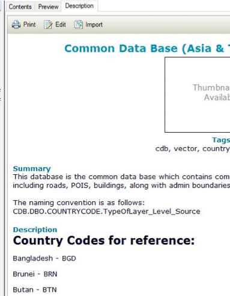

Chapter 4 PC/Servers Management
For Sentinel Asia and IDC Activation, we use several PC and servers for processing, storing data and results.
4.1 ArcGIS Enterprise Geodatabase Connection
4.1.1 Downloading SQL Server and setting it up
Note: This needs to be completed only once before you can connect to the server.
- Download and install SQL sever
- This is found in KEPLA: \203.159.29.17-Resources-Software_and_Tools_server

- Go through general installation prompts to install.

- Click next and agree to go through the installation steps.
- Features selection -select the boxes shown below
- Complete the rest of the steps and instal the server.
4.1.2 Connecting to Geodatabases
Connecting to the server and the databases is important as it allows the user to find and locate common data.
You can connect through either ArcCatalog or ArcGIS Pro Contents. Connecting through ArcCatalog:
Open ArcCatalog
Add Database connection as follows:
- Connect to the Database using the following fields:
Figure 4.1: Username: gic, password: GICuser123
- On the Database drop down list, here is where you select which database to connect to. Perform this step multiple times to connect to all relevant databases you want to access - once connected you won’t need to connect again.
Databases:
CDB - This is the common database with all common country data (vector)
CDB_R - This it the common database with all raster data
ArcGIS online - This is for ArcGIS Online files
SA - Sentinel Asia
SA_R - Sentinel Asia Raster

Once the chosen Database is connected it will show on the side bar, y ou can rename this to the database name - double click this to open and view the data. All data in the database will show up here, with the database name followed by the file name.
For the common database, all countries are clustered into raster datasets, click these to open.


Note: Click description to find the corresponding names for country codes
- If you want to use this data in your map file, just drag the data into ArcMap from ArcCatalog, it will open like any file

- You can also access the database from ArcCatalog in the side bar of ArcMap:
Following link in Youtube will provide you on the how to do the procedure https://youtu.be/3DWrBp_5MJc
4.2 SQL Server
GIC Enterprise Databases are stored in SQL Server. The databases are regularly backup to Kepler and Google Drive (geoinfo )
4.2.1 Maintenance
4.2.1.1 SQL Backup and Monitoring
4.2.1.2 SQL Database Recovery
We have to make one session to practice on how to recover database, in case of hard drive failure.
4.3 IMS-Server
4.3.1 Connection
4.4 Sentinel-PC
4.4.1 Connection
https://www.youtube.com/watch?v=Dpx9NslsIqg&feature=youtu.be
4.5 MacPro
4.5.1 Connection
4.6 Cloud Server (Google Compute Engine)
In case of IDC activation, some of the data will be provided through FTP sites (port 21). FTP port is restricted at the office network, we have to download the data by using the server located in GIC Google Compute Engine. This method will also increase downloading speed from certain data provider (e.g., CNES).
The method is explained in this video link https://youtu.be/NS6oLCNrGHg